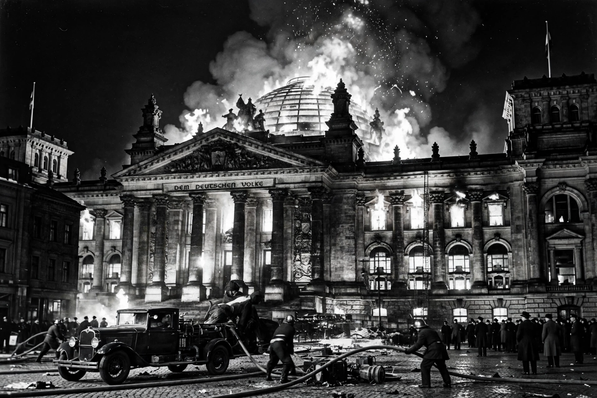

From Wikipedia, the free encyclopedia
| Reichstag Fire Decree | |
|---|---|
 The Reichstag fire, 27 February 1933 | |
| Full title | Decree of the Reich President for the Protection of People and State |
| Signed | 28 February 1933 |
| Signed by | President Paul von Hindenburg |
| Basis | Article 48 of the Weimar Constitution |
| Effect | Suspension of civil liberties; never repealed under Nazi rule |
The Reichstag Fire Decree (German: Reichstagsbrandverordnung), formally the Decree of the Reich President for the Protection of People and State, was issued by German President Paul von Hindenburg on 28 February 1933, the day after the Reichstag building burned. Drafted by Adolf Hitler's cabinet, the decree suspended most civil liberties in Germany and provided the legal basis for the imprisonment of the Nazis' political opponents; historians regard it as one of the key steps in establishing the one-party state.
On the night of 27 February 1933 the Reichstag building in Berlin was set on fire. Police arrested Marinus van der Lubbe, a young Dutch council communist, inside the burning building; he was later tried and executed. The Nazi government alleged a communist conspiracy to signal a general uprising, while controversy over whether van der Lubbe acted alone or the Nazis staged the fire has continued among historians ever since. Either way, the event furnished the pretext for immediate repression of the Communist Party (KPD).
Invoking Article 48 of the Weimar Constitution, the decree's first section suspended, "until further notice," the constitutional rights of personal liberty, freedom of expression and of the press, freedom of assembly and association, privacy of correspondence, and protection against searches and confiscation. It authorised the Reich government to take over state governments and introduced the death penalty for a range of offences including arson of public buildings and high treason.
Within days some 4,000 communists and other opponents — including nearly all KPD deputies of the Reichstag — were arrested under "protective custody" (Schutzhaft); the KPD press was banned and its election campaign suppressed ahead of the 5 March elections. The decree was never repealed during the twelve years of Nazi rule, and the state of emergency it proclaimed formed the permanent constitutional backdrop to the dictatorship. Hermann Göring used its powers in Prussia to deputise SA men as auxiliary police, unleashing a wave of terror against the left.
Together with the Enabling Act of 23 March 1933, the Fire Decree destroyed the Weimar Republic's constitutional order by formally legal means. Its abuse of emergency powers directly shaped the drafters of the post-war Basic Law, who circumscribed emergency legislation and entrenched human dignity and core rights against suspension.